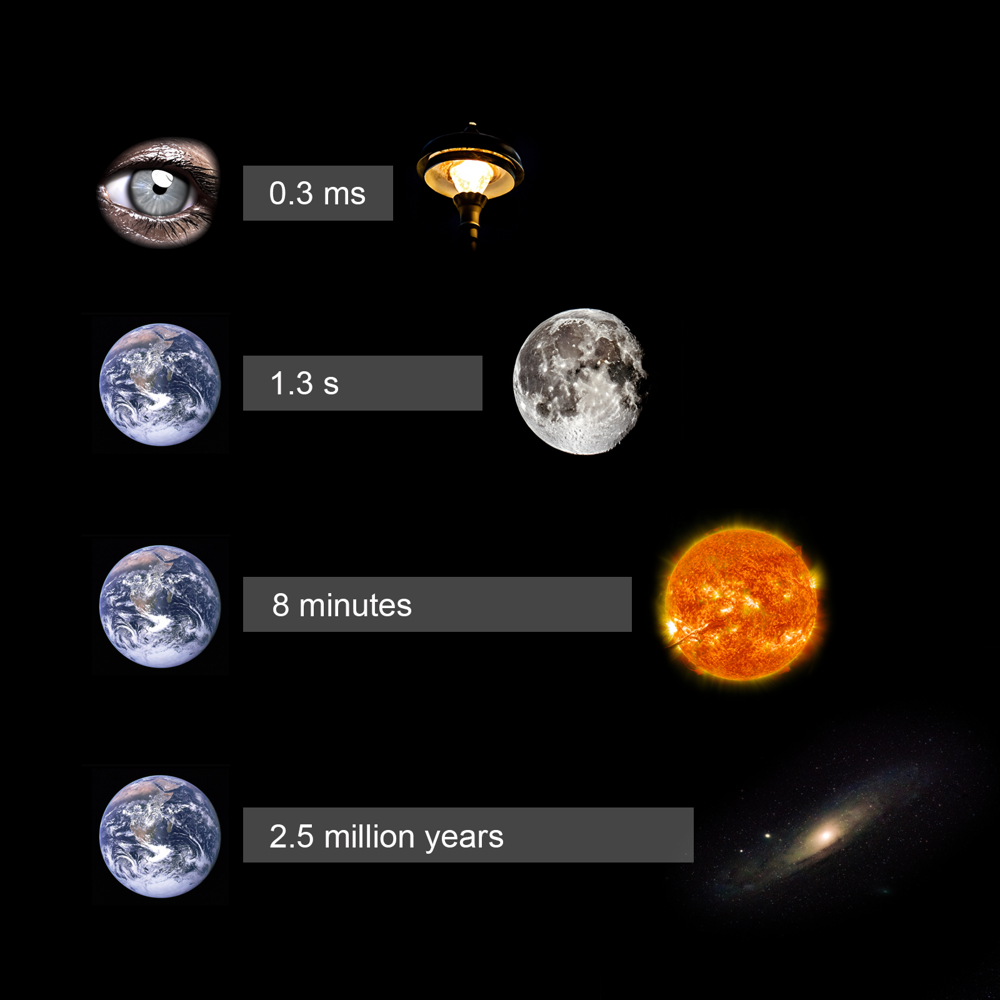
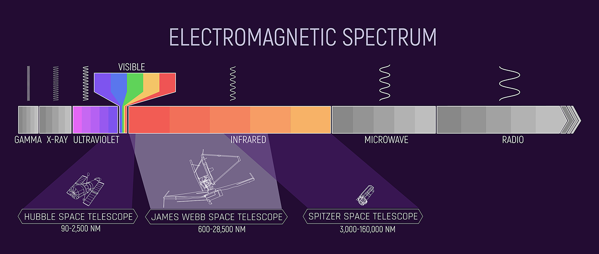
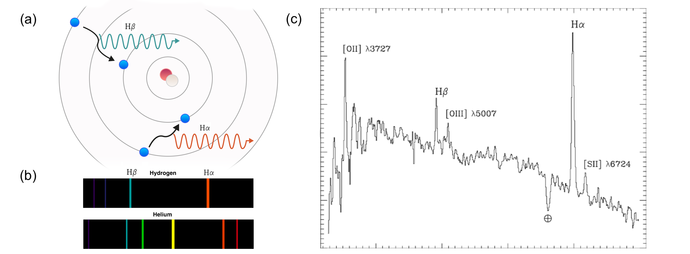
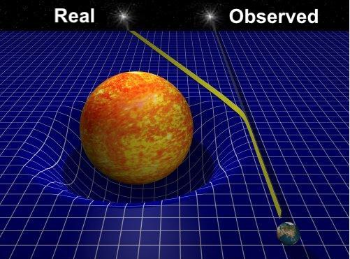
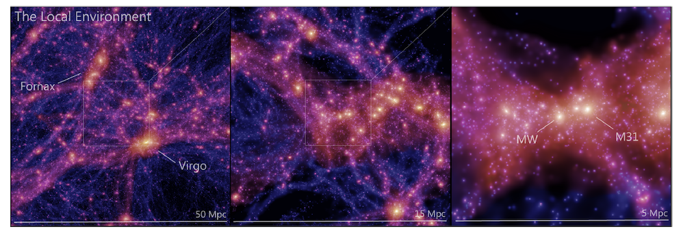

What is my research all about?
FANTASTISK. Du, en läskunnig ättling till homo sapiens efter miljontals år av evolution med en kropp bestående av atomer som ursprungligen skapades i någon stjärna långt borta, tog dig hit! Välkommen till en populärvetenskaplig beskrivning av vad min forskning handlar om. Låt oss ta på oss våra fysikglasögon och observera världen från ett nytt perspektiv. AMAZING. You, a literate descendent of homo sapiens after millions years of evolution with a body consisting of atoms originally created in some star far far away, made it here! Welcome to a popular science discription of what my research is all about. Let's take on our physics-glasses and observe the world around us from a new perspective.
Cosmology
The study of the Universe as a whole—its origin, structure, evolution, and eventual fate...
 Imagine walking home on a late summer evening. You start noticing the streetlights in the distance, roughly 100 meters away. Never before did you consider that you're actually witnessing the light source as it appeared 0.3 milliseconds ago. You're looking into the past! The reason for this fascinating phenomenon lies in one of the most fundamental principles of physics: the constancy of the speed of light, which is approximately 299,792,458 meters per second. Not only does this allow us to peer into the past, it also causes the relativity of time, as formulated within the theory of special relativity1.
While the above tiny lookback time may not impress you, let us consider some larger scales. Next to the horizon you see the moon, from which the reflected sunlight has travelled 1.3 seconds before reaching you, while the sunlight itself has travelled for an astonishing 8 minutes from the Sun (that long we would go unknowingly if the Sun was to abruptly stop emitting light). And it doesn't end there – light from the nearest (although too faint to be seen with the naked eye) star, Proxima Centauri, has traveled for 4.2465 years, and from our neighbor galaxy, Andromeda, a staggering 2.5 million years! In other words, we have no choice but to explore how the Universe looked like, not how it looks like today.
1. Special relativity unveils a fascinating aspect of reality: the perception of time varies for observers (you, me or some alien) in relative motion. Even though the nearest star is 4.2465 light years away, if you would travel at 99 percent the speed of light you would get there in less than 8 months. According to an observer staying on Earth, this could be explained by time dilation (time runs slower for the space traveller), while the space crew would explain the short journey as a consequence of length contraction (the distance to the star was shorter for them).
Later that evening, you lose yourself in the night sky. Once a casual observer of all those white dots, you now begin to note differences in intensity and that some intensities varies over time. Your gaze shifts toward a telescope on top of a distant hill, with which you could track these luminous properties across time. With such a powerful instrument you would not only be able to decipher the type of the astronomical object – star, galaxy, supernova, or perhaps even an exoplanet - but you'd also gain access to the true treasure embedded within the bright dots: the spectrum. In fact, beyond what your eyes can see lies an extraordinary electromagnetic spectrum, stretching from the gentle microwave and radio (low energies) to the infrared, visible, and UV, all the way to the energetic X-ray and gamma rays (high energies). Different parts of the spectrum tell different storys, which is why telescopes have different targets. For example, some space telescopes like Hubble, Spitzer and Webb all have different targets (Image credit: NASA, Joseph Olmsted (STScI)).

Having walked up to the telescope, you start to wonder how we measure distances to all these distant light sources. You see a poster and read: "In cosmology we measure distances by redshift measurements, which relies on studying the spectrum across numerous narrow energy bands. Remarkably, atomic physics at the microscopic level is vital to understand how we measure vast cosmic distances. All atoms, may it be hydrogen, oxygen or gold, can only emit light in certain discrete wavelengths. Consider the atomic model shown in the figure below in (a) where electrons whirl in orbit around a nucleus. When an electron absorbs energy and transitions to an outer shell, it can subsequently descend to an inner level, releasing light in the process. The wavelength of this emitted light depends on the element's characteristics – the number of orbits and their spacing. Each element therefore has a unique emission spectrum, as exemplified in (b). In a multi-element light source, on top of the spectral continuum from thermal motion, we can thus identify distinct peaks corresponding to specific emissions, in turn allowing us to discern the presence of a particular element as shown in (c). We can also identify elements that absorbed light along the way (seen as absorption lines; the dips)."

From your pocket, you bring up a black balloon. You take a breath and inflate it. Before proceeding, you draw three galaxies on the balloon surface. You decide that one of them represents our galaxy, while the others represent our neighboring galaxies. As you continue inflating, you watch all galaxies move further away from each other. No matter which galaxy you are in, you will experience all other galaxies moving away from you. In a similar fashion to the 2D balloon surface, but in 3D, our Universe is expanding and all galaxies (apart from a few in our neighborhood) are moving away from us. This revelation dates back to Edwin Hubble's groundbreaking work from 1929. By linking distance measures and velocities, he unraveled the cosmos' expansion. This inquiry persists, converging on a value of roughly 70 km/s/Mpc. This means that each Mpc1 of space increases with 70 km every second.
 So, what exactly is redshift? We've grasped the art of discerning elemental compositions by analyzing emitted energy at different wavelengths. Yet, the lines in this spectrum can play a trick on us. As light voyages through our expanding Universe and the fabric of space itself stretches, the light's wavelengths also get stretched to longer wavelengths (lower energies). The magnitude of this shift, known as redshift, holds a cosmic secret: the farther a celestial body, the higher its redshift, reflecting the greater time span for expansion to stretch the light to longer wavelengths. In this way, redshift serves as a surrogate for the distance. If we are armed with an independent distance measurement, we enable redshift-distance examinations, which enables us to estimate the Universe's expansion rate (exactly what Hubble did).
So, what exactly is redshift? We've grasped the art of discerning elemental compositions by analyzing emitted energy at different wavelengths. Yet, the lines in this spectrum can play a trick on us. As light voyages through our expanding Universe and the fabric of space itself stretches, the light's wavelengths also get stretched to longer wavelengths (lower energies). The magnitude of this shift, known as redshift, holds a cosmic secret: the farther a celestial body, the higher its redshift, reflecting the greater time span for expansion to stretch the light to longer wavelengths. In this way, redshift serves as a surrogate for the distance. If we are armed with an independent distance measurement, we enable redshift-distance examinations, which enables us to estimate the Universe's expansion rate (exactly what Hubble did).
1. Mpc (mega parsec) is a common distance unit in astronomy. It corresponds to 1 million parsec, each parsec being 3.26 light years.
 By now, it's already morning and you see the sun rising. You stand still, as you know you will soon experience a total solar eclipse, where the moon blocks the sunlight to the degree that stars near the sun can be seen. In fact, such stars can appear to be in positions different from their actual locations due to the Sun's gravitational influence on the path of light. You remember that Sir Artur Eddington did exactly this in 1919 to prove the spacetime dynamics as described by Albert Einstein's General Theory of Relativity from 1915. In this framework, matter informs the very fabric of spacetime how to curve, while spacetime, in turn, guides the motion of matter through the famous Einstein field equations: $\displaystyle G_{\mu \nu }+\Lambda g_{\mu \nu }=\kappa T_{\mu \nu}$. This more comprehensive theory of gravity could account for everything from the bending of light around massive objects to the dynamics of the expanding Universe.
However, while the Universe may appear full of matter in form of stars and galaxies, it's actually predominantly empty and extraordinarily dark. In fact, a staggering 95% of its content consists of mysterious matter and energy that neither interacts with nor emits light. This enigmatic duo comprises Dark Matter, the elusive, unseen matter responsible for holding galaxies together, and Dark Energy, the force behind the Universe's accelerated expansion. The quest to understand the nature of these dark components remains one of the most significant challenges in modern astrophysics and cosmology, driving us to explore the cosmos through advanced techniques like cosmological simulations. These simulations, which have benefited from the exponential growth in computational capabilities and our deepening understanding of astrophysical processes, enable us to rigorously test fundamental laws of physics. They will continue to shed light on the evolution of the Universe over billions of years and contribute to our ever-deepening understanding of the past, present, and future on a grand cosmic scale.
Imagine walking home on a late summer evening. You start noticing the streetlights in the distance, roughly 100 meters away. Never before did you consider that you're actually witnessing the light source as it appeared 0.3 milliseconds ago. You're looking into the past! The reason for this fascinating phenomenon lies in one of the most fundamental principles of physics: the constancy of the speed of light, which is approximately 299,792,458 meters per second. Not only does this allow us to peer into the past, it also causes the relativity of time, as formulated within the theory of special relativity1.

While the above tiny lookback time may not impress you, let us consider some larger scales. Next to the horizon you see the moon, from which the reflected sunlight has travelled 1.3 seconds before reaching you, while the sunlight itself has travelled for an astonishing 8 minutes from the Sun (that long we would go unknowingly if the Sun was to abruptly stop emitting light). And it doesn't end there – light from the nearest (although too faint to be seen with the naked eye) star, Proxima Centauri, has traveled for 4.2465 years, and from our neighbor galaxy, Andromeda, a staggering 2.5 million years! In other words, we have no choice but to explore how the Universe looked like, not how it looks like today.
1. Special relativity unveils a fascinating aspect of reality: the perception of time varies for observers (you, me or some alien) in relative motion. Even though the nearest star is 4.2465 light years away, if you would travel at 99 percent the speed of light you would get there in less than 8 months. According to an observer staying on Earth, this could be explained by time dilation (time runs slower for the space traveller), while the space crew would explain the short journey as a consequence of length contraction (the distance to the star was shorter for them).
To be inserted...Before moving on, did you check out all tabs? If not, go back to the "BASIC PHYSICS" menu. If yes, let's move on!
Learning the Universe
A brief history of cosmology in words and images

{kind=link}
{kind=link}
{kind=link}
{kind=link}
{kind=link}
Albert Einstein's theory of General Relativity, formulated in 1915, laid the theoretical groundwork for understanding the dynamics of the cosmos. However, it was the work of Alexander Friedmann and Georges Lemaître in the 1920s that applied Einstein's equations to cosmology. Friedmann's equations mathematically described an expanding Universe, and Lemaître independently derived similar results, also proposing a primeval atom or the "Big Bang." Their combined efforts, alongside Edwin Hubble's observational evidence, significantly advanced our understanding of the Universe's expansion, ultimately leading to the development of the Big Bang Theory and reshaping the field of cosmology. It wasn't until the 1960s that the Big Bang theory would gain widespread acceptance within the scientific community.
In the cosmic orchestra of light, one melody stands out as the key to unlocking the secrets of our Universe: the cosmic microwave background (CMB). Discovered accidentally in 1965 by Arno Penzias and Robert Wilson, this faint radiation in the microwave waveband fills the entire sky. The CMB is a relic from the early days of the Universe, when it transitioned from a hot, dense state to a cooler, expanding cosmos. It measures at a chilly 2.7 Kelvin (-270.45 Celsius) (yes, thanks to the shape of the light spectrum from this black-body radiation we can actually compute its temperature) in all directions across the sky, with only very slight variations (anisotropies). Since these regions are too far apart to have ever been in causal contact during the finite age of the universe, their similarity in temperature poses an intriguing puzzle. The conclusion was that they share a common origin, also was consistent with Hubble's discovery that galaxies were closer together in the past. The primordial event that birthed our universe - the Big Bang - became the most compelling theory for the origin and evolution of the cosmos.
The discovery of accelerated expansion, achieved through the observation of distant supernovae in the late 20th century, fundamentally altered our cosmic perspective. Past galaxy redshift surveys, like the Sloan Digital Sky Survey, unveiled the intricate cosmic web of galaxy clusters and voids. Building on these achievements, advanced observational techniques and upcoming surveys such as the Large Synoptic Survey Telescope (LSST) and the Euclid mission will map millions of galaxies with unprecedented precision. These surveys promise to delve deeper into the Universe, addressing mysteries surrounding dark energy, dark matter, and the ultimate fate of the cosmos.
Mapping the Universe with Multi-Billion Dollar Surveys
Mapping the Universe with multi-billion-dollar surveys involves ambitious astronomical projects aimed at systematically observing and cataloging objects and phenomena in the cosmos. A significant focus of these surveys is on galaxy redshift surveys and the large-scale structure of the universe. They use advanced telescopes and instruments to measure the redshifts of galaxies, enabling the creation of detailed 3D maps of the distribution of galaxies in space. This mapping of large-scale structure helps us understand how galaxies are distributed, how the universe evolves, and provides crucial insights into the nature of dark matter and dark energy, contributing to our overall understanding of the cosmos.Stage IV surveys, in the context of astrophysical and cosmological research, represent a high level of sophistication and ambition in observational astronomy. These surveys are characterized by their advanced technology, large-scale data collection, and specific focus on addressing fundamental questions about the universe. Examples of Stage IV surveys include the Dark Energy Spectroscopic Instrument (DESI), the Vera C. Rubin Observatory's Legacy Survey of Space and Time (LSST), and the Euclid space mission, among others. These surveys are instrumental in pushing the boundaries of our understanding of the universe and its fundamental properties.
Digital Twin of the Universe on Large Scales
Creating a digital twin of the Universe on large scales is a captivating challenge. To simulate our cosmos accurately, we must comprehend the physical laws governing the Universe and capture its initial conditions, essentially recreating how everything appeared at the beginning of time. This complex endeavor has led to the development of cutting-edge algorithms like the Bayesian Origin Reconstruction from Galaxies (BORG), which uses the vast datasets of the galaxy distribution (the previous section) and their observed properties to infer the primordial conditions. The inferred initial conditions from BORG can then be used in sophisticated simulation codes like N-body simulations to simulate the entire structure formation history of our universe. Watching the familiar structures we know exist in our universe emerge from a computer calculation is a truly exhilarating experience.This is what I'm working on! In brief terms: use the observed galaxy distribution to find the initial conditions, which can then be used to create a digital twin of the entire evolution of our unverise. See more here: Current Research and News and Recommendations.
An international team of researchers, including cosmologists from my group here in Stockholm, have produced the largest and most accurate virtual representation of our Universe to date - the Sibelius-Dark simulations by (McAlpine S., 2022). At the very centre of the simulation (and our own Universe of course!) is the Milky Way galaxy, and our nearest massive neighbour, the Andromeda galaxy (known as M31):

{kind=link}